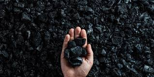

¿Qué es el Carbono?
El carbono es uno de los elementos de la tabla periódica más importantes para los seres vivos ya que conforma la base de la vida tal y como la conocemos. Esto es posible porque el carbono es capaz de formar una enorme variedad de compuestos químicos estables, razón por la que muchos lo consideran el rey de los elementos químicos.
El carbono (C ) es un no metal con número atómico 6, que se sitúa en el segundo período y en el grupo 14 de la tabla periódica.

La mayor peculiaridad del carbono es que puede unirse tanto a sí mismo como a muchos otros elementos químicos, de modo que llega a formar más de diez millones de compuestos.
El carbono y la vida
Los usos del carbono son numerosos y muy variados. Para empezar, es el único elemento capaz de dotar a los seres vivos de los compuestos orgánicos que necesitamos para vivir. Por esta razón, todas las plantas y animales están formados por compuestos del carbono.
Usos del carbono en la industria
En su forma elemental, los usos del carbono van desde la joyería de lujo (diamantes) hasta otros usos industriales. Por ejemplo, el grafito se utiliza en las minas de los lápices y también como lubricante. El isótopo carbono-14 se utiliza en arqueología para la datación radiométrica.